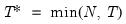
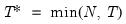

|
|
|
), “user” (user specified value), where
is the number of series and
is the number of observations.
 and let ; then the default maximum lag is given by
and let ; then the default maximum lag is given by